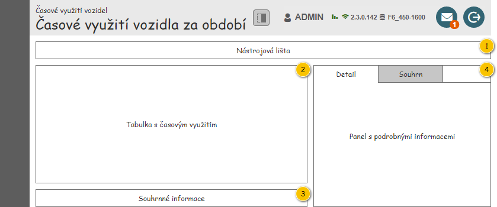
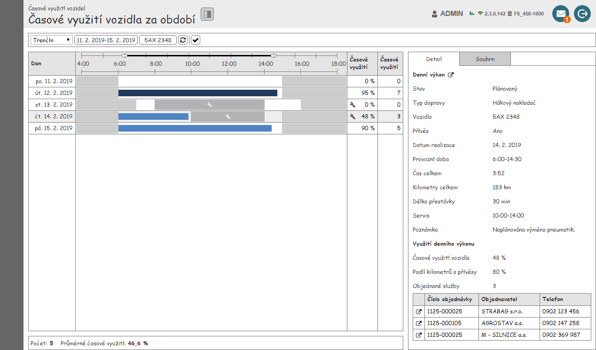
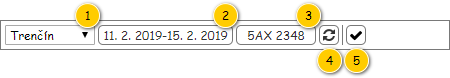
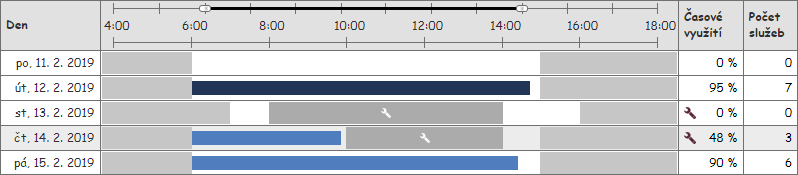

Stručný popis
Obrazovka slouží k zobrazení časového využití vozidla za zadané období.
Poznámka: Jednotlivé dílčí komponenty jsou společné pro více obrazovek s časovým využití, a tak jsou uvedeny v samostatném dokumentu – viz .
Množina vstupních dat vychází z položek umístěných v nástrojové liště obrazovky.
Uživatelské rozhraní
Nejdříve je zobrazena struktura obrazovky spolu s náhledem, následně jsou jednotlivé části postupně popsány.
Hlavička obsahuje tlačítko umožňující skrytí panelu s podrobnými informacemi – chování a parametry tlačítka jsou následující:
- Komponenta: ToggleButton.
- Ikona: ra-panel-top (otočená o 90°).
- Chování:
- Stisknutí tlačítka provede skrytí/zobrazení panelu.
- Pokud je tlačítko stisknuto, je panel zobrazen, jinak je panel skryt.
- Výchozí stav: nestisknuto.
Rozložení
Drátový diagram

Přehled UI komponent
| Callout | Skupina |
|---|---|
| 1 | Nástrojová lišta |
| 2 | Tabulka s časovým využitím |
| 3 | Souhrnné informace |
| 4 | Panel s podrobnými informacemi |
Náhled
Dále je uveden drátový diagram s náhledem celé obrazovky.

Nástrojová lišta
Výchozí hodnoty nastavené v nástrojové liště jsou uvedeny v jejím popisu. Následně si již Systém pamatuje, jaké parametry uživatel nastavil, a při dalším zobrazení obrazovky tyto parametry předvyplní.
Drátový diagram

Přehled UI komponent
| Callout | Komponenta | Nadpis | Typ komponenty | Příklad hodnoty | Hodnota | Výchozí hodnota | Formát | Zpřístupněná | Viditelná | Chování | Validace | Poznámka |
|---|---|---|---|---|---|---|---|---|---|---|---|---|
| 1 | Výběr provozovny | – | ComboBox | Provozovna Trenčín | Entita Provozovna. Dostupné jsou takové Provozovny, které splňují zároveň všechny uvedené podmínky:
| V pořadí první uživateli dostupná Provozovna. | Vždy | Vždy | Po výběru Provozovny se načtou odpovídající Denní výkony – viz Načtení denních výkonů. | – | Pokud je v ovládacím prvku obsažena pouze jedna Provozovna, chová se tento ovládací prvek jako TextBox. | |
| 2 | Výběr období | – | Button | 11. 2. 2019-15. 2. 2019 | Jedná se o výstup nabídky pro nastavení období – položky Datum od, Datum do. | Aktuální týden. | Vždy | Vždy | Po stisknutí tlačítka se zobrazí kontextová nabídka pro výběr období po dnech – viz Výběr období po dnech. V nabídce je zobrazeno aktuálně nastavené období. Po výběru období se načtou odpovídající Denní výkony – viz Načtení denních výkonů. | Maximálně období o délce 31 dní. | – | |
| 3 | Výběr vozidla | – | Button | 5AX 2348 | Entita Vozidlo. | – | Vždy | Vždy | Po stisknutí tlačítka se zobrazí modální okno pro výběr Vozidla – viz 700UI05: Výběrové dialogy – Vozidlo.
Po výběru Vozidla se načtou odpovídající Denní výkony – viz Načtení denních výkonů. | – | – | |
| 4 | Obnovení dat | – | Button
| – | – | – | – | Vždy | Vždy | Po stisknutí tlačítka se načtou odpovídající Denní výkony – viz Načtení denních výkonů. | – | – |
| 5 | Pouze řádky s denním výkonem | – | ToggleButton
| – | – | TRUE | – | Vždy | Vždy | Stisknutím tlačítka dojde k aktualizaci zobrazených řádků v Tabulce s časovým využitím. Pokud je tlačítko stisknuto – TRUE:
Jinak – FALSE:
Podrobný popis chování je uveden v rámci popisu Tabulky s časovým využitím. | – | – |
Chování
Načtení denních výkonů
Pokud dojde k situaci, kdy mají být načteny Denní výkony, je nutné nejprve vyhodnotit, zda jsou dostupná všechna vstupní data – žádná z dále uvedených hodnot není NULL. Pokud jsou vstupní data k dispozici, je spuštěn , na vstup jsou jsou pak předány následující hodnoty:
- Provozovna: Provozovna zvolená v nástrojové liště.
- Období: období zvolené v nástrojové liště (Datum od-Datum do).
- Vozidlo: Vozidlo zvolené v nástrojové liště.
Pokud máme k dispozici Denní výkony, můžeme je zobrazit v tabulce a následně získat souhrnné hodnoty – je spuštěn 203UC07: Získat souhrnné informace o denních výkonech, na vstup jsou pak předány následující hodnoty:
- Denní výkony: Denní výkony načtené v předcházejícím kroku.
Pokud Denní výkony k dispozici nejsou (na výstupu bylo předáno NULL), souhrnné hodnoty získávány nejsou, tomu pak odpovídá i jejich zobrazení.
Následně pokračujeme zobrazením souhrnných hodnot – viz dále.
Pokud dojde k načtení Denních výkonů, Systém zruší zruší výběr řádku, pokud byl před načtením některý vybrán.
Tabulka s časovým využitím
Do tabulky s časovým využitím jsou vkládány jednotlivé řádky na základě nastavení provedeného uživatelem – Pouze řádky s denním výkonem (komponenta 5), viz Nástrojová lišta:
- TRUE: Jsou vloženy pouze řádky pro Denní výkony, které byly získány v rámci Načtení denních výkonů.
- FALSE: Jsou vloženy řádky pro všechna data realizace nastavené v nástrojové liště – Výběr období (komponenta 2), viz Nástrojová lišta.
Poznámka: Pokud nebyl získán žádný Denní výkon, je zobrazena prázdná tabulka.
Tabulka je ve výchozím stavu řazena vzestupně dle sloupce Datum realizace.
Drátový diagram

Přehled UI komponent
| Sloupec | Nadpis | Typ komponenty | Příklad hodnoty | Hodnota | Výchozí hodnota | Formát | Možnosti sloupce | Zpřístupněná | Viditelná | Chování | Validace | Poznámka |
|---|---|---|---|---|---|---|---|---|---|---|---|---|
| Datum realizace | Den | TextBox | pá, 15. 2. 2019 | Entita Denní výkon. | – |
|
| Nikdy | Vždy | – | – | – |
| Diagram časového využití | Časová osa | Diagram časového využití denního výkonu | – | Entita Denní výkon, která je předána na vstup použité komponenty (může být NULL). | – | – |
| Nikdy | Vždy | – | – | – |
| Časové využití vozidla | Časové využití | TextBox | 48 % | Entita Denní výkon. | – | Získání časového využití vozidla
Pokud není k odpovídajícímu datu realizace dostupný Denní výkon, není hodnota zobrazena vůbec. Pokud jsou zároveň splněny všechny uvedené podmínky, je místo hodnoty zobrazen zástupný text: – (ALT+0150).
|
| Nikdy | Vždy | Pokud je k odpovídajícímu datu realizace dostupný Denní výkonu a je v něm obsažen alespoň jeden Interval omezení denního výkonu typu Alokace na servis, je zobrazena ikona:
Ikona je v rámci buňky zarovnána vlevo. | – | – |
| Počet objednaných služeb | Počet služeb | TextBox | 3 | Entita Denní výkon. | – | Získání počtu objednaných služeb
Pokud není k odpovídajícímu datu realizace dostupný Denní výkon, není hodnota zobrazena vůbec. Pokud jsou zároveň splněny všechny uvedené podmínky, je místo hodnoty zobrazen zástupný text: – (ALT+0150).
|
| Nikdy | Vždy | – | – | – |
Chování
Získání časového využití vozidla
Pokud je k dispozici Denní výkon, odpovídá zobrazená hodnota jeho stavu (atribut Stav):
- Pokud je Denní výkon, který je v rámci řádku zobrazen, ve stavu Uzavřený (atribut Stav):
- atribut Časové využití entity Realizace denního výkonu – takové Realizace denního výkonu, u které hodnota atributu Denní výkon odpovídá Dennímu výkonu, který je v řádku zobrazen (poznámka: v tomto případě by měla Realizace denního výkonu vždy existovat).
- Jinak:
- atribut Časové využití entity Denní výkon, která je v řádku zobrazena.
Jinak není hodnota předána a následně tedy ani zobrazena.
Získání počtu objednaných služeb
Pokud je k dispozici Denní výkon, odpovídá zobrazená hodnota jeho stavu (atribut Stav):
- Pokud je Denní výkon, který je v rámci řádku zobrazen, ve stavu Uzavřený (atribut Stav):
- počet Objednaných služeb v rámci odpovídající Realizace denního výkonu – takové Objednané služby, u kterých hodnota atributu Realizace denního výkonu odpovídá takové Realizaci denního výkonu, u které hodnota atributu Denní výkon odpovídá Dennímu výkonu, který je v řádku zobrazen.
- Jinak:
- atribut Počet objednaných služeb entity Denní výkon, která je v řádku zobrazena.
Jinak není hodnota předána a následně tedy ani zobrazena.
Souhrnné informace
Zobrazené informace jsou získány v rámci Načtení denních výkonů. Pokud však nebyl načten žádný Denní výkon, je zobrazen zástupný text – viz dále.
Drátový diagram

Přehled UI komponent
| Callout | Komponenta | Nadpis | Typ komponenty | Příklad hodnoty | Hodnota | Výchozí hodnota | Formát | Zpřístupněná | Viditelná | Chování | Validace | Poznámka |
|---|---|---|---|---|---|---|---|---|---|---|---|---|
| 1 | Počet načtených denních výkonů | Počet zobrazených: | Label | 5 | Získána v rámci Načtení denních výkonů – položka Počet. Na vstup volaného 203UC07: Získat souhrnné informace o denních výkonech jsou ale předány pouze takové Denní výkony, které jsou právě zobrazeny v tabulce. Jsou tedy brány v potaz nastavené filtry a podobně. | – |
Pokud nebyl v rámci Načtení denních výkonů předán žádný Denní výkon (bylo vráceno NULL), je místo hodnoty zobrazen zástupný text: – (ALT+0150). | – | Vždy | – | – | V rámci získání hodnoty je volán 203UC07: Získat souhrnné informace o denních výkonech, na jehož hodnoty je odkazováno ve sloupci Formát. |
| 2 | Průměrné časové využití načtených denních výkonů | Průměrné časové využití: | Label | 46,6 % | Získána v rámci Načtení denních výkonů – položka Časové využití vozidel. Na vstup volaného 203UC07: Získat souhrnné informace o denních výkonech jsou ale předány pouze takové Denní výkony, které jsou právě zobrazeny v tabulce. Jsou tedy brány v potaz nastavené filtry a podobně. | – | <Časové využití vozidel> %
Barva písma závisí na konkrétní zobrazené hodnotě:
Pokud nebyl v rámci Načtení denních výkonů předán žádný Denní výkon (bylo vráceno NULL), je místo hodnoty zobrazen zástupný text: – (ALT+0150). Barva písma je pak nastavena do výchozího stavu. | – | Vždy | – | – | V rámci získání hodnoty je volán 203UC07: Získat souhrnné informace o denních výkonech, na jehož hodnoty je odkazováno ve sloupci Formát. |
Panel s podrobnými informacemi
Panel s podrobnými informacemi obsahuje dvě karty, a to v uvedeném pořadí:
- Detail – podrobné informace o Denním výkonu.
- Souhrn – souhrnné informace o načtených Denních výkonech.
Detail
Panel s detailem Denního výkonu je popsán v samostatném dokumentu – viz 200UI04: Detail denního výkonu – detail. Na vstup je pak předán právě označený Denní výkon.
Poznámka: Pokud není označen žádný řádek tabulky, případně označený řádek nemá přiřazen žádný Denní výkon, je předáno NULL.
Souhrn
Panel se souhrnnými informacemi o načtených Denních výkonech je popsán v samostatném dokumentu – viz . Na vstup je pak předána kolekce Denních výkonů, které jsou právě načteny. Pokud není žádný Denní výkon k dispozici (v rámci Načtení denních výkonů bylo vráceno NULL), je předáno NULL.
Poznámka: V rámci příprav tohoto panelu je volán 203UC07: Získat souhrnné informace o denních výkonech, který je ale volán i při Načtení denních výkonů. Volání tedy stačí provést pouze jednou – je předána stejná sada Denních výkonů – a data použít pro více skupin této obrazovky.
Grafický návrh
Revize
31. 8. 2023: Tomáš Nadrchal
| Odkaz | Stručný popis změny/doplnění |
|---|---|
| Nástrojová lišta | Revize dostupných provozoven (naznačeno modře). |
21. 6. 2019: Tomáš Nadrchal
| Odkaz | Stručný popis změny/doplnění |
|---|---|
| Nástrojová lišta | Aktualizován popis dostupných Provozoven v nástrojové liště (komponenta 1, naznačeno modře). |
13. 6. 2019: Tomáš Nadrchal
Provedené změny korespondují s akceptačními testy pro M6 (potřebná data jsou k dispozici až v rámci M8) – bude zobrazováno využití Vozidla podle toho, zda jsou již k dispozici data ze skutečného provozu (z GPS jednotky).
| Odkaz | Stručný popis změny/doplnění |
|---|---|
| Tabulka s časovým využitím | Aktualizován popis chování pro získání zobrazených hodnot (naznačeno modře). |
| Detail | Použit detail Denního výkonu, který byl vytvořen v rámci M8 (naznačeno modře). |
8. 6. 2019: Tomáš Nadrchal
| Odkaz | Stručný popis změny/doplnění |
|---|---|
| Tabulka s časovým využitím | Doplněn popis dostupných funkcí pro práci s jednotlivými sloupci. |
14. 3. 2019: Tomáš Nadrchal
| Odkaz | Stručný popis změny/doplnění |
|---|---|
| Uživatelské rozhraní | Doplněna informace o možnosti zobrazit/skrýt postranní panel. |
| Nástrojová lišta | Přidána poznámka o chování ovládacího prvku pro výběr Provozovny. |